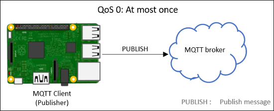

Publish MQTT Messages and Subscribe to Message Topics
Message Queuing Telemetry Transport (MQTT) is a publish-subscribe architecture that is developed primarily to connect bandwidth and power-constrained devices over wireless networks. It is a simple and lightweight protocol that runs over TCP/IP sockets, WebSockets, and (Secure Sockets Layer) SSL.
MQTT has two components:
MQTT broker: An MQTT broker is a central point of communication. The broker is responsible for dispatching all messages between the clients.
MQTT client: An MQTT client is any device (for example, a computer or a mobile phone) that connects to the broker. A client that sends messages is a publisher. A client that receives messages is a subscriber. To receive a message, the client must subscribe to the topic of that message.
You can publish and subscribe to MQTT messages using MQTT Publish
and MQTT Subscribe
blocks. These blocks support MQTT only over TCP/IP sockets.
Topics in MQTT
A topic is an identifier (ID) used by the MQTT broker to identify rightful clients for delivering messages. Each client that wants to send messages publishes them on a certain topic, and each client that wants to receive messages subscribes to a certain topic.
A topic is a string and can consist of one or more topic levels. Each level is
separated by a forward slash (/), for example,
raspberrypi/model3/sensor/data.
A topic:
Must have at least one character.
Is case-sensitive. For example,
raspberrypi/model3/sensor/dataandRaspberrypi/Model3/Sensor/Dataare two different topics.
Wildcards in MQTT Topics
Wildcards are special characters in a topic used by the clients to subscribe to multiple topics. MQTT supports single-level and multi-level wildcards.
Single-level wildcard: A single-level wildcard is represented using a plus sign (
+). For a client to receive messages, all the levels of the subscribed topic, except the level with a+sign, must match the topic of the incoming message. You can include more than one single-level wildcard in a topic string.Multi-level wildcard: A multi-level wildcard is represented using a number sign (
#). Client receives message from all the sublevels of the subscribed topic. You can include only one multi-level wildcard, and it must be at the end of the topic string.Wildcard in Topic Client Subscribed Topic Matches Does Not Match Single-level wildcard raspberrypi/+/sensor/dataraspberrypi/model3/sensor/dataraspberrypi/pizero/sensor/data
In this example, the wildcard
+is replaced bymodel3andpizero. All other levels match the client subscribed topic. The client receives messages from these topics.raspberrypi/model3/gpio/dataraspberrypi/pizero/PWM/message
In this example, the wildcard
+is replaced bymodel3andpizero. Other levels do not match the client subscribed topic. The client does not receive messages from these topics.Multi-level wildcard (All the sublevels) raspberrypi/model3/#raspberrypi/model3/gpio/messageraspberrypi/ model3/PWM/temperature
In this example, the wildcard
#is replaced bygpio/messageandPWM/temperature. All other levels match the client subscribed topic. The client receives messages from these topics.raspberrypi/pizero/PWM/dataarduino/zerow/sensor/data
In this example, the wildcard,
#is replaced byPWM/dataandsensor/data. Other levels do not match the client subscribed topic. The client does not receive messages from these topics.
Levels of QoS in MQTT
Quality of Service (QoS) defines the reliability of the message delivery process in MQTT. MQTT provides three QoS levels for message delivery: QoS 0, QoS 1, and QoS 2. You can have different QoS levels for publishing and for subscribing to messages. The MQTT broker that you are using might not support all three levels of QoS. For example, ThingSpeak™ MQTT supports only QoS 0.
QoS Level for Publish
QoS 0: The publisher sends message to the MQTT broker at most once. The broker does not acknowledge the receipt of the message.

QoS 1: The publisher sends the message to the MQTT broker at least once. The publisher stores the message until it receives an acknowledgment from the broker. If no acknowledgment is received after 10 seconds, the publisher resends the message. In this level, the same message might be delivered to the broker more than once.
QoS 2: The publisher sends the message to the MQTT broker exactly once. The publisher stores the message until it gets an acknowledgment from the broker. Once the acknowledgment is received, the publisher and the broker discard the stored messages. QoS2 uses additional acknowledgments to ensure that no duplicate message is delivered to the broker.
QoS Level for Subscribe
QoS 0: The MQTT broker sends message to the client at most once. The client does not acknowledge the receipt of the message.
QoS 1: The MQTT broker sends the message to the client at least once. The MQTT broker stores the message until it gets an acknowledgment from the client. If no acknowledgment is received after 10 seconds, the broker resends the message. In this level, the same message might be delivered more than once.
QoS 2: The MQTT broker sends the message to the client exactly once. The MQTT broker stores the message until it gets an acknowledgment from the client. Once the acknowledgment is received, the broker and the subscriber discard the stored messages. QoS2 uses additional acknowledgments to ensure that no duplicate message is delivered.